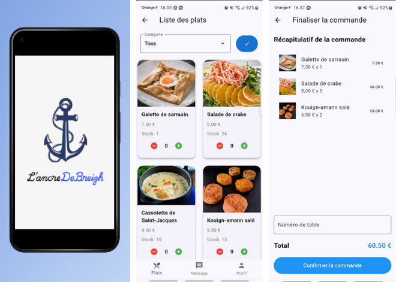

L’ancre de Breizh

Technologies : Flutter, Dart, Android Studio
Type : Application mobile
But : Permettre à un restaurant breton de gérer son activité mobile
Le projet L’ancre de Breizh est une application mobile développée avec Flutter. Elle répond au besoin d’un restaurant fictif qui souhaite moderniser sa communication, fluidifier les commandes pour les serveurs.
Fonctionnalités principales :
- Navigation fluide entre les rubriques : accueil, carte, réservation
- Formulaire de commande intégré avec gestion des quantités
- Design adaptatif compatible Android / iOS
Mon rôle :
- Conception du routing vers l'API entre Flutter et la base de donnée
- Développement de l'applications (interface, menus déroulants, checkbox, filtre...)
- Création des assets UI et intégration responsive
Ce projet m’a fait découvrir les contraintes d’une UI mobile, l’importance de l’ergonomie tactile et l’écosystème Flutter (state management, Material design, etc.).
← Retour aux projets